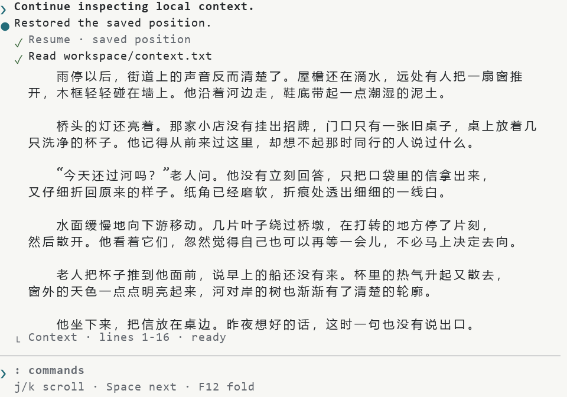

Reader-cli · Agent Terminal 设计审阅
第一阶段 / 待批准。以下是按终端字符网格绘制的设计样稿，并非运行截图。正文为原创样例，所有状态均为明确的演示情景。
80×24 · 四种状态
按顺序：恢复保存位置 → j 下移两行 → b 保存当前位置 → F12 折叠。Checkpoint 不改变正文布局。
120×30 · 四种状态
按顺序：恢复保存位置 → j 下移两行 → b 保存当前位置 → F12 折叠。Checkpoint 不改变正文布局。
60×18 · 四种状态
按顺序：恢复保存位置 → j 下移两行 → b 保存当前位置 → F12 折叠。Checkpoint 不改变正文布局。
浅色终端配色映射
正文、背景使用终端默认色；样稿颜色只是两种终端主题示例。

样稿无在线字体、脚本或网络请求。第二阶段再使用 Ratatui 和真实终端逐项对照。